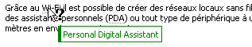
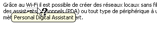
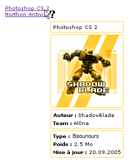

Ce tutoriel a pour but de vous montrer comment modifier l'apparence d'une infobulle. Je ne vous présenterai que l'une des nombreuses façons d'y parvenir.
Tout d'abord, qu'est-ce qu'une infobulle ?
Il est important de différencier infobulle (attribut title="") de texte alternatif (attribut alt="").
Le texte alternatif (attribut alt="") est le texte descriptif appliqué uniquement aux images et nécessaire au cas où il y aurait un problème lors du chargement de celles-ci, par exemple. Une infobulle est une description succincte d'une icône ou d'un bouton de l'interface graphique et qui apparaît à l'écran lorsque le curseur reste quelques secondes sur l'élément auquel elle est appliquée. Une infobulle s'obtient, en xHTML, grâce à l'ajout de l'attribut title="", le plus souvent sur les balises de type :
<a></a>
<p>Cliquez <a href="accueil.html" title="Wireless Fidelity">ici</a> pour retourner à l'accueil.</p>
<acronym></acronym>
<p>Grâce au <acronym title="Wireless Fidelity">Wi-Fi</acronym> il est possible de créer des réseaux (..)</p>
<img />
<p>Voici une photo de mes vacances : <img src="plage.jpg" title="Mon dernier coucher de soleil" /></p>
Il n'est pas possible de modifier l'apparence de l'infobulle générée par l'attribut title="". Cependant, il est tout à fait envisageable de créer sa propre infobulle en utilisant une balise que l'on fait apparaître au survol du texte.
Vous le savez certainement : il est permis de masquer des éléments présents sur une page Web grâce à la propriété CSS display: à laquelle on attribue la valeur « none ». C'est précisément grâce à ce principe que nous allons construire notre infobulle. Voici tout d'abord le code xHTML qui sera appliqué systématiquement aux éléments dont vous souhaiterez personnaliser l'infobulle :
<a href="#" class="info">[ELEMENT]<span>[INFOBULLE]</span></a>
L'entité [ELEMENT] peut aussi bien représenter du texte qu'une image ou tout autre élément susceptible de disposer d'une infobulle. Dans notre cas, nous considérerons que « [ELEMENT] » est du texte.
L'entité [INFOBULLE] correspond au texte qui sera affiché dans l'infobulle.
Voici donc notre code xHTML d'exemple :
<p>
Grâce au <a href="#" class="info">Wi-Fi<span>contraction de Wireless Fidelity</span></a>, il est possible de créer des réseaux locaux sans fil à haut débit pour peu que la station à connecter ne soit pas trop distante par rapport au point d'accès. Dans la pratique, le <a href="#" class="info">Wi-Fi<span>contraction de Wireless Fidelity</span></a> permet de relier des ordinateurs portables, des « machines de bureau », des assistants personnels (<a href="#" class="info">PDA<span>Personal Digital Assistant</span></a>) ou tout type de périphérique entre eux grâce à une liaison haut débit (11 Mb/s ou supérieur) sur un rayon de plusieurs dizaines de mètres en intérieur (généralement, entre une vingtaine et une cinquantaine de mètres) à plusieurs centaines de mètres en environnement ouvert.
</p>
Le principe est simple : en temps normal, l'infobulle est masquée. Lorsque le texte (dans notre cas) est survolé, l'infobulle est affichée.
Voici le code CSS :
* {
font-size: 11px; /* On définit les propriétés de texte pour toutes les balises. */
font-family: Tahoma, Verdana, Arial, serif;
}
a.info {
position: relative;
color: black;
text-decoration: none;
border-bottom: 1px gray dotted; /* On souligne le texte. */
}
a.info span {
display: none; /* On masque l'infobulle. */
}
a.info:hover {
background: none; /* Correction d'un bug d'Internet Explorer. */
z-index: 500; /* On définit une valeur pour l'ordre d'affichage. */
cursor: help; /* On change le curseur par défaut par un curseur d'aide. */
}
a.info:hover span {
display: inline; /* On affiche l'infobulle. */
position: absolute;
white-space: nowrap; /* On change la valeur de la propriété white-space pour qu'il n'y ait pas de retour à la ligne non désiré. */
top: 30px; /* On positionne notre infobulle. */
left: 20px;
background: white;
color: green;
padding: 3px;
border: 1px solid green;
border-left: 4px solid green;
}
Si vous ne connaissez pas certaines propriétés CSS parmi celles utilisées ci-dessus, je vous renvoie à l'annexe du tutoriel de M@teo21 établissant la liste des propriétés CSS.
Voici le code complet :
<!DOCTYPE html PUBLIC "-//W3C//DTD XHTML 1.1//EN" "http://www.w3.org/TR/xhtml11/DTD/xhtml11.dtd">
<html xmlns="http://www.w3.org/1999/xhtml" xml:lang="fr" >
<head>
<title></title>
<meta http-equiv="Content-Type" content="text/html; charset=iso-8859-1" />
<style type="text/css">
* {
font-size: 11px; /* On définit les propriétés de texte pour toutes les balises. */
font-family: Tahoma, Verdana, Arial, serif;
}
a.info {
position: relative;
color: black;
text-decoration: none;
border-bottom: 1px gray dotted; /* On souligne le texte. */
}
a.info span {
display: none; /* On masque l'infobulle. */
}
a.info:hover {
background: none; /* Correction d'un bug d'Internet Explorer. */
z-index: 500; /* On définit une valeur pour l'ordre d'affichage. */
cursor: help; /* On change le curseur par défaut par un curseur d'aide. */
}
a.info:hover span {
display: inline; /* On affiche l'infobulle. */
position: absolute;
white-space: nowrap; /* On change la valeur de la propriété white-space pour qu'il n'y ait pas de retour à la ligne non désiré. */
top: 30px; /* On positionne notre infobulle. */
left: 20px;
background: white;
color: green;
padding: 3px;
border: 1px solid green;
border-left: 4px solid green;
}
</style>
</head>
<body>
<p>Grâce au <a href="#" class="info">Wi-Fi<span>contraction de Wireless Fidelity</span></a>, il est possible de créer des réseaux locaux sans fil à haut débit pour peu que la station à connecter ne soit pas trop distante par rapport au point d'accès. Dans la pratique, le <a href="#" class="info">Wi-Fi<span>contraction de Wireless Fidelity</span></a> permet de relier des ordinateurs portables, des « machines de bureau », des assistants personnels (<a href="#" class="info">PDA<span>Personal Digital Assistant</span></a>) ou tout type de périphérique entre eux grâce à une liaison haut débit (11 Mb/s ou supérieur) sur un rayon de plusieurs dizaines de mètres en intérieur (généralement, entre une vingtaine et une cinquantaine de mètres) à plusieurs centaines de mètres en environnement ouvert.</p>
</body>
</html>
Et pour vous donner un aperçu des innombrables possibilités qui vous sont offertes par cette astuce, voici d'autres mises en forme (toujours avec le même code xHTML, il n'y a que le code CSS qui change) :
- 
style d'infobulle du cours :
- 
style d'infobulle de Windows XP :
- 
une infobulle un peu plus complexe, mais qui utilise le principe que je vous ai enseigné :
et pour terminer, un système d'aperçu d'images :
Libre à vous désormais de modifier vos infobulles. On peut imaginer un tas d'applications à cette astuce. Sachant qu'une image peut être affichée dans l'infobulle, vous pourriez par exemple réaliser un système d'aperçu d'images.
Comme toujours, les possibilités ne se limitent qu'à votre imagination.
Ce tutoriel touche à sa fin. J'espère avoir été le plus clair possible ; si ce n'est pas le cas, notifiez-le-moi via le système de commentaires, je m'empresserai de corriger les points ambigus.
Citation : Duc de La Rochefoucauld
L'esprit s'attache par paresse et par constance à ce qui lui est facile ou agréable ; cette habitude met toujours des bornes à nos connaissances, et jamais personne ne s'est donné la peine d'étendre et de conduire son esprit aussi loin qu'il pourrait aller.